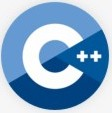

//Patrick Stumbaugh
//Minesweeper game
#include <iostream>
#include <stdlib.h>
#include <time.h>
#include <stdio.h>
using namespace std;
//global constants
int SIZE; //length of the board (SIZE x SIZE)
int MINES; //amount of mines in play
const int MAXSIDE = 25;
const int MAXMINES = 99;
int mmx = -1;
int mmy = -1;
bool mm = false;
//function declarations
void gameSetup(char masterBoard[][MAXSIDE], char playerBoard[][MAXSIDE]);
void placeMines(int mines[][2], char masterBoard[][MAXSIDE]);
bool checkPosition (int row, int col);
bool mineCheck (int row, int col, char board[][MAXSIDE]);
void makeMove(int &x, int &y);
void checkMoveBounds(int &x, int &y);
bool moveMine (int row, int col, char board[][MAXSIDE],
char masterBoard[][MAXSIDE]);
void printBoard(char playerBoard[][MAXSIDE]);
int adjacentMineCheck(int row, int col, int mines[][2],
char masterBoard[][MAXSIDE]);
void playGame();
bool MSutility(char playerBoard[][MAXSIDE], char masterBoard[][MAXSIDE],
int mines[][2], int row, int col, int &movesLeft);
void getGameSize();
void printRules();
int main()
{
cout << endl << endl << "Welcome to Minesweeper!" << endl;
printRules();
getGameSize(); //prompts user for size of board
playGame();
cout << endl << endl;
return 0;
}
//*******************FUNCTIONS*******************
//initializes a new, empty board for player
//INPUT: masterBoard array and playerBoard array
//OUTPUT: nothing
void gameSetup(char masterBoard[][MAXSIDE], char playerBoard[][MAXSIDE])
{
// Initiate the random number generator so that
// the same configuration doesn't arises
srand(time (NULL));
// Initialize all cells to empty (will add mines later in seperate func)
for (int i = 0; i <= SIZE; i++)
{
for (int j = 0; j <= SIZE; j++)
{
playerBoard[i][j] = masterBoard[i][j] = '-';
}
}
return;
}
//Places mines randomly throughout board
//INPUT: mines array, masterBoard array
//OUTPUT: nothing
void placeMines(int mines[][2], char masterBoard[][MAXSIDE])
{
bool mark[MAXSIDE*MAXSIDE];
int temp = MAXSIDE*MAXSIDE;
for (int a = 0; a <= temp; a++)
{
mark [a] = false;
}
// Continue until all random mines have been created.
for (int i = 0; i < MINES; )
{
int random = rand() % (SIZE*SIZE);
int x = random / SIZE;
int y = random % SIZE;
// Add the mine if no mine is placed at this
// position on the board
if (mark[random] == false)
{
// Row for the mine
mines[i][0] = x;
// Column for the mine
mines[i][1] = y;
// Place mine
masterBoard[mines[i][0]][mines[i][1]] = '*';
mark[random] = true;
i++;
}
}
return;
}
//Check if a cell is valid/available to play
//INPUT: row and column
//OUTPUT: True is valid position, else false
bool checkPosition(int row, int col)
{
if ((row >= 0) && (row < SIZE) && (col >= 0) && (col < SIZE))
return true;
else
return false;
}
//checks if position selected has a mine or not
//INPUT: row, column and board array
//OUTPUT: true if a mine is at that position, else false
bool mineCheck (int row, int col, char board[][MAXSIDE])
{
if (board[row][col] == '*')
return true;
else
return false;
}
//Input user's move
//INPUT: x and y positions
//OUTPUT: nothing
void makeMove(int &x, int &y)
{
// Take the input move
cout << "Enter your move" << endl;
cout << "Row: ";
cin >> x;
cout << "Column: ";
cin >> y;
return;
}
void checkMoveBounds(int &x, int &y)
{
if ((x < 0) || (x >= SIZE) || (y < 0) || (y >= SIZE))
{
cout << "Invalid input, please try again." << endl;
makeMove(x, y);
checkMoveBounds(x, y);
}
else
return;
}
//Moves a mine to a different position
//guarentees player's first move will not result in a mine position
//INPUT: row, column and board array
//OUTPUT: nothing
bool moveMine (int row, int col, char board[][MAXSIDE],
char masterBoard[][MAXSIDE])
{
//iterate to first empty location, replace that with a mine
//make player's location an empty position
for (int i = 0; i < SIZE; i++)
{
for (int j = 0; j < SIZE; j++)
{
if (masterBoard[i][j] != '*')
{
masterBoard[i][j] = '*';
masterBoard[row][col] = '-';
return true;
}
}
}
return false;
}
//Prints the current board
//INPUT: playerBoard array
//OUTPUT: displays board
void printBoard(char playerBoard[][MAXSIDE])
{
int i, j;
cout << (" ");
for (i = 0; i < SIZE; i++) //print top column numbers
{
if (i >= 10)
cout << " " << i << ".";
else
cout << " " << i << ".";
}
cout << endl;
for (i = 0; i < SIZE; i++)
{
if (i >= 10)
{
cout << " " << i << "."; //print row number
for (j = 0; j < SIZE; j++)
cout << " " << playerBoard[i][j]; //print out items in that row
cout << endl; //heading to next row, new line
}
else
{
cout << " " << i << "."; //print row number
for (j = 0; j < SIZE; j++)
cout << " " << playerBoard[i][j]; //print out items in that row
cout << endl; //heading to next row, new line
}
}
return;
}
//Counts the number of mines in the 8 adjacent cells to user's position
//INPUT: row, column, mines array, masterBoard array
//OUTPUT: count of mines near user's position
int adjacentMineCheck(int row, int col, int mines[][2],
char masterBoard[][MAXSIDE])
{
int count = 0;
//if cell is not valid (ie - outside board bounds), ignore
//North neighbour
if (checkPosition (row-1, col) == true)
{
if (mineCheck (row-1, col, masterBoard) == true)
count++;
}
//South neighbour
if (checkPosition (row+1, col) == true)
{
if (mineCheck (row+1, col, masterBoard) == true)
count++;
}
//East neighbour
if (checkPosition (row, col+1) == true)
{
if (mineCheck (row, col+1, masterBoard) == true)
count++;
}
//West neighbour
if (checkPosition (row, col-1) == true)
{
if (mineCheck (row, col-1, masterBoard) == true)
count++;
}
//NE neighbour
if (checkPosition (row-1, col+1) == true)
{
if (mineCheck (row-1, col+1, masterBoard) == true)
count++;
}
//NW neighbour
if (checkPosition (row-1, col-1) == true)
{
if (mineCheck (row-1, col-1, masterBoard) == true)
count++;
}
//SE neighbour
if (checkPosition (row+1, col+1) == true)
{
if (mineCheck (row+1, col+1, masterBoard) == true)
count++;
}
//SW neighbour
if (checkPosition (row+1, col-1) == true)
{
if (mineCheck (row+1, col-1, masterBoard) == true)
count++;
}
return (count);
}
//Play the minesweeper game
//NOTE - if player's first pick ims a mine, the game will move the mine.
//INPUT: nothing
//OUTPUT: nothing
void playGame ()
{
//initialize variables / arrays
bool gameOver = false;
char masterBoard[MAXSIDE][MAXSIDE]; //gamemaster's board
char playerBoard[MAXSIDE][MAXSIDE]; //players board
int movesLeft = ((SIZE * SIZE) - MINES); //size of board minus minus
int x;
int y;
int currentMove = 0;
int mines[MAXMINES][2]; // will store position for all mines.
//setup the gamemaster and player boards (all empty positions)
gameSetup(masterBoard, playerBoard);
//place the mines randomly on gamemaster's board
placeMines (mines, masterBoard);
while (gameOver == false)
{
cout << "Current board :" << endl;
printBoard (playerBoard); //shows player's board
makeMove (x, y); //Prompts player to pick position for mine
checkMoveBounds(x, y); //checks the player's input
//if first move of game == mine position, move that mine
//guarentee's player's first move will be available
if (currentMove == 0)
{
if (mineCheck(x, y, masterBoard) == true)
{
mm = moveMine(x, y, playerBoard, masterBoard);
mmx = x;
mmy = y;
}
}
currentMove ++;
gameOver = MSutility(playerBoard, masterBoard, mines, x, y, movesLeft);
if (movesLeft < 0)
movesLeft = movesLeft * -1;
if ((gameOver == false) && (movesLeft == 0)) //player won!
{
printBoard (playerBoard);
cout << endl << "You won!" << endl;
cout << "Thank you for playing!" << endl;
gameOver = true;
}
if ((gameOver == true) && (movesLeft != 0)) //player lost
{
if (masterBoard[x][y] == '*')
{
playerBoard[x][y]='*';
for (int i=0; i<MINES; i++)
playerBoard[mines[i][0]][mines[i][1]]='*';
if (mm == true) //original position was swapped
{
int mmPosition =
adjacentMineCheck(x, y, mines, masterBoard) + 1 + '0';
playerBoard[mmx][mmy] = mmPosition;
printBoard (playerBoard);
}
else
printBoard (playerBoard);
}
cout << "You lost." << endl;
cout << "Better luck next time!" << endl;
cout << "Thank you for playing!" << endl;
}
//else continue playing...
}
return;
}
//Utility function to play minesweeper game (compares player's board to
// masterBoard)
//***Recursively moves until mine enountered
//INPUT: playerBoard, masterBoard and mines arrays, row, column and movesLeft
//OUTPUT: True if player picks a mine position (ends game), else false
bool MSutility(char playerBoard[][MAXSIDE], char masterBoard[][MAXSIDE],
int mines[][2], int row, int col, int &movesLeft)
{
//if not empty position, return false
//base case ends (later) recurisve calls
if (playerBoard[row][col] != '-')
return false;
//if player (or later recursion) picked position with a mine, return true
if (masterBoard[row][col] == '*')
{
return true;
}
//else find adjacent free cells
else
{
// Calculate the number of adjacent mines and put it on the board
int count = adjacentMineCheck(row, col, mines, masterBoard);
movesLeft--;
playerBoard[row][col] = count + '0';
if (!count)
{
//if cell is not valid (ie - outside board bounds), ignore
//N neighbour
if (checkPosition (row-1, col) == true)
{
if (mineCheck (row-1, col, masterBoard) == false)
MSutility(playerBoard, masterBoard, mines, row-1, col, movesLeft);
}
//S neighbour
if (checkPosition (row+1, col) == true)
{
if (mineCheck (row+1, col, masterBoard) == false)
MSutility(playerBoard, masterBoard, mines, row+1, col, movesLeft);
}
//E neighbour
if (checkPosition (row, col+1) == true)
{
if (mineCheck (row, col+1, masterBoard) == false)
MSutility(playerBoard, masterBoard, mines, row, col+1, movesLeft);
}
//W neighbour
if (checkPosition (row, col-1) == true)
{
if (mineCheck (row, col-1, masterBoard) == false)
MSutility(playerBoard, masterBoard, mines, row, col-1, movesLeft);
}
//NE neighbour
if (checkPosition (row-1, col+1) == true)
{
if (mineCheck (row-1, col+1, masterBoard) == false)
MSutility(playerBoard, masterBoard, mines, row-1, col+1, movesLeft);
}
//NW neighbour
if (checkPosition (row-1, col-1) == true)
{
if (mineCheck (row-1, col-1, masterBoard) == false)
MSutility(playerBoard, masterBoard, mines, row-1, col-1, movesLeft);
}
//SE neighbour
if (checkPosition (row+1, col+1) == true)
{
if (mineCheck (row+1, col+1, masterBoard) == false)
MSutility(playerBoard, masterBoard, mines, row+1, col+1, movesLeft);
}
//SW neighbour
if (checkPosition (row+1, col-1) == true)
{
if (mineCheck (row+1, col-1, masterBoard) == false)
MSutility(playerBoard, masterBoard, mines, row+1, col-1, movesLeft);
}
}
return false;
}
}
//Prompts user for the size of the gameboard
//Note - # of mines in game is the same as one side of the board
// ie - 9x9 board = 9 mines. 20x20 board = 20 mines
//INPUT: nothing
//OUTPUT: nothing (changes global variables SIZE and MINES)
void getGameSize ()
{
//user input must be >= 2 and < 25
while ((SIZE <= 2) || (SIZE > 25))
{
cout << "Enter the size of the game you would like to play ";
cout << "(min = 3, max = 25)." << endl;
cout << "(example: 9 = 9x9 board)" << endl;
cout << "size: ";
cin >> SIZE;
MINES = SIZE;
if ((SIZE <= 2) || (SIZE > 25))
cout << "Invalid input, please try again." << endl << endl;
}
return;
}
//Prints out the rules of the game
//INPUT: nothing
//OUTPUT: nothing
void printRules()
{
cout << "RULES OF MINESWEEPER:" << endl;
cout << "1. Don't pick a mine, or your game will be over!" << endl;
cout << "2. If you pick a spot that is not a mine, you'll get a number. ";
cout << "That number will tell you how many adjacent cells have mines. "
"Use that number (and maybe some luck) to guess where more open "
"cells will be." << endl;
cout << "3. If you open a cell with 0 neighboring mines, all the "
"neighbors will automatically open." << endl;
cout << "4. You win once all the cells without mines are found!" << endl;
cout << endl;
return;
}
|
Minesweeper game

This is a simple buildout of a minesweeper game that runs through console. It is built using C++.
This was designed to implement different types of algorithms as well as an example of recursion.
This is the full code, so if you would like to play it, feel free to copy and paste in your own compiler.
Full Code
|